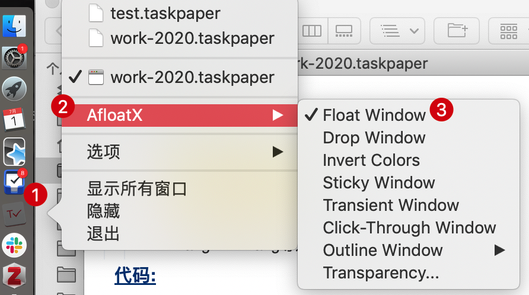

<!DOCTYPE HTML>
<html>
<head>
  <meta charset="utf-8">
  
  <title>在macOS中置顶窗口 | Shigaro</title>
  <meta name="author" content="minyez">
  
  <meta name="description" content="minyez&#39;s blog on life, science and programming">
  
  
  <meta name="viewport" content="width=device-width, initial-scale=1, maximum-scale=1">

  <meta property="og:title" content="在macOS中置顶窗口"/>
  <meta property="og:site_name" content="Shigaro"/>

  
    <meta property="og:image" content=""/>
  

  
  
    <link href="/assets/images/favicon/icon.png" rel="icon">
  
  
  <link rel="stylesheet" href="/css/bootstrap.min.css" media="screen" type="text/css">
  <link rel="stylesheet" href="/css/bootstrap.css" media="screen" type="text/css">
  <link rel="stylesheet" href="/css/font-awesome.css" media="screen" type="text/css">
  <link rel="stylesheet" href="/css/style.css" media="screen" type="text/css">
  <link rel="stylesheet" href="/css/responsive.css" media="screen" type="text/css">
  <link rel="stylesheet" href="/css/highlight.css" media="screen" type="text/css">
  <link rel="stylesheet" href="/css/google-fonts.css" media="screen" type="text/css">
  <!--[if lt IE 9]><script src="//html5shiv.googlecode.com/svn/trunk/html5.js"></script><![endif]-->

  <script src="/js/jquery-2.0.3.min.js"></script>

  <!-- analytics -->
  
<script>
  (function(i,s,o,g,r,a,m){i['GoogleAnalyticsObject']=r;i[r]=i[r]||function(){
  (i[r].q=i[r].q||[]).push(arguments)},i[r].l=1*new Date();a=s.createElement(o),
  m=s.getElementsByTagName(o)[0];a.async=1;a.src=g;m.parentNode.insertBefore(a,m)
  })(window,document,'script','//www.google-analytics.com/analytics.js','ga');
  ga('create', 'UA-111612868-1', 'auto');
  ga('send', 'pageview');
</script>


<script async src="//busuanzi.ibruce.info/busuanzi/2.3/busuanzi.pure.mini.js">
</script>


</head>

 <body 
>
  <nav id="main-nav" class="navbar navbar-default navbar-fixed-top" role="navigation">
  <div class="container">
    <button type="button" class="navbar-header navbar-toggle" data-toggle="collapse" data-target=".navbar-collapse">
      <span class="sr-only">Toggle navigation</span>
      <span class="icon-bar"></span>
      <span class="icon-bar"></span>
      <span class="icon-bar"></span>
    </button>
    <a class="navbar-brand" href="/"></a>
    <div class="collapse navbar-collapse nav-menu">
      <ul class="nav navbar-nav">
        

        <!-- Categories -->
        
        <li>
          <a href="/" title="Shigaro's Home"
            style="font-weight: normal; font-family: Calibri,Arial; font-size: 18px">
            <i class="fa fa-bank"></i>Home
          </a>
        </li>
        
        

        <!-- Categories -->
        
        <!-- Archives -->
        <li>
          <a href="/archives" title="All the articles."
            style="font-weight: normal; font-family: Calibri,Arial; font-size:     18px">
            <i class="fa fa-archive"></i>Archives
          </a>
        </li>
        
        

        <!-- Categories -->
        
        <!-- Tags -->
        <li>
          <a href="/tags" title="All the tags."
            style="font-weight: normal; font-family: Calibri,Arial; font-size:     18px">
            <i class="fa fa-tags"></i>Tags
          </a>
        </li>
        
        

        <!-- Categories -->
        
        <li class="dropdown">
          <a href="/categories" class="dropdown-toggle" data-toggle="dropdown" title="All the categories."
            style="font-weight: normal; font-family: Calibri,Arial; font-size:     18px">
            <i class="fa fa-folder"></i>Categories
            <b class="caret"></b>
          </a>
          <ul class="dropdown-menu">
            <li class="divider"></li>
            <li><a href="/categories" style="font-size: 20px; font-family: 'Calibri Light',Arial">All
                Categories</a><span></span></li>
            <li class="divider"></li>
            
            <li><a href="/categories/Software/"
                style="font-size: 15px; font-family: 微软雅黑">Software<span></span></a></li>
            
            <li><a href="/categories/Programming/"
                style="font-size: 15px; font-family: 微软雅黑">Programming<span></span></a></li>
            
            <li><a href="/categories/Comment/"
                style="font-size: 15px; font-family: 微软雅黑">Comment<span></span></a></li>
            
            <li><a href="/categories/Algorithm/"
                style="font-size: 15px; font-family: 微软雅黑">Algorithm<span></span></a></li>
            
            <li class="divider"></li>
          </ul>
        </li>
        
        

        <!-- Categories -->
        
        <li>
          <a href="/about" title="About me."
            style="font-weight: normal; font-family: Calibri,Arial; font-size: 18px">
            <i class="fa fa-user"></i>About
          </a>
        </li>
        
        
      </ul>
    </div>
  </div> <!-- container -->
</nav>
<div class="clearfix"></div>
  <div class="container">
  	<div class="content">
    	 


	
		<div class="page-header">		
			<h1> 在macOS中置顶窗口</h1>
		</div>		
	


<div class="row post">
	<!-- cols -->
	
	<div id="top_meta"></div>
	<div class="col-md-9">
	

	<!-- content -->
	<div class="mypage">		
	  		

	  <link rel="stylesheet" type="text/css" href="/css/hint.min.css"><div class="alert alert-success"><i class="fa fa-lightbulb-o  float-left"></i>  <p>使用MacForge和AfloatX插件, 在Mojave系统下允许窗口置顶.</p>
</div>
<a id="more"></a>
<h2 id="前言"><a href="#前言" class="headerlink" title="前言"></a>前言</h2><p>macOS上一直困扰我的问题是没有简单的窗口置顶工具. 在PC下, 播放器之类的很多软件在任务栏上都有一个小图钉图标, 点一下就可以置顶. 但是macOS上竟然找不到自带这样功能的软件. 这归因于自Mac OS El Capitan以后苹果引入的系统完整性保护 (System Integrity Protection, SIP). 根据<a href="https://en.wikipedia.org/wiki/System_Integrity_Protection#Functions" target="_blank" rel="noopener">维基百科</a>, SIP禁止用户对根目录下<code>/System</code>和<code>/usr</code>等特定文件夹的修改, 关闭代码注入和运行时进程附着, 禁止未签名的内核扩展. 由此看来, 将窗口置顶可能涉及向Finder运行时进行代码注入从而被SIP禁止, 因此按正常流程发布的app就不可能实现这个功能了. 但另一方面, 窗口置顶是否有可能通过由app发送置顶请求到Finder, Finder向用户一次性请求权限的方式来实现呢? 这就要看今后Apple对macOS的改进了.</p>
<p>可是对于Mojave来说恐怕等不到那个时候, 所以还是得自己想办法. <a href="https://www.maketecheasier.com/mac-keeping-your-application-window-always-on-top/" target="_blank" rel="noopener">这篇文章</a>提供了比较完整的思路, 主要是利用mySIMBL进行代码注入, 置顶功能由<a href="https://github.com/rwu823/afloat" target="_blank" rel="noopener">Afloat</a>提供. 有点遗憾的是, 这篇文章时间比较久远了, mySIMBL已经升级成了<a href="https://github.com/MacEnhance/MacForge" target="_blank" rel="noopener">MacForge</a>, Afloat数年没有更新, 几乎被<a href="https://github.com/jslegendre/AfloatX" target="_blank" rel="noopener">AfloatX</a>取代. 不过基本思路没有变化, 就在这里简单记录一下流程.</p>
<h2 id="流程记录"><a href="#流程记录" class="headerlink" title="流程记录"></a>流程记录</h2><h3 id="Step-1-部分关闭SIP"><a href="#Step-1-部分关闭SIP" class="headerlink" title="Step 1 部分关闭SIP"></a>Step 1 部分关闭SIP</h3><p>这一部分在<a href="https://github.com/MacEnhance/MacForge/wiki/Installation" target="_blank" rel="noopener">MacForge Wiki页</a>上有充分的描述. 重启, 按住<code>CMD+R</code>进入recovery mode. 从左上角菜单栏打开终端, 输入以下部分关闭SIP的命令</p>
<figure class="highlight shell"><table><tr><td class="gutter"><pre><span class="line">1</span><br></pre></td><td class="code"><pre><span class="line">csrutil enable --without fs --without nvram --without debug</span><br></pre></td></tr></table></figure>
<p><code>without</code>选项指定禁止的SIP功能. 对应内容可由直接输入<code>csrutil</code>来理解</p>
<figure class="highlight plain"><table><tr><td class="gutter"><pre><span class="line">1</span><br><span class="line">2</span><br><span class="line">3</span><br><span class="line">4</span><br><span class="line">5</span><br><span class="line">6</span><br><span class="line">7</span><br><span class="line">8</span><br><span class="line">9</span><br><span class="line">10</span><br><span class="line">11</span><br><span class="line">12</span><br></pre></td><td class="code"><pre><span class="line">$ csrutil</span><br><span class="line">System Integrity Protection status: enabled (Custom Configuration).</span><br><span class="line">Configuration:</span><br><span class="line">    Apple Internal: disabled</span><br><span class="line">    Kext Signing: enabled</span><br><span class="line">    Filesystem Protections: disabled</span><br><span class="line">    Debugging Restrictions: disabled</span><br><span class="line">    DTrace Restrictions: enabled</span><br><span class="line">    NVRAM Protections: disabled</span><br><span class="line">    BaseSystem Verification: enabled</span><br><span class="line"></span><br><span class="line">This is an unsupported configuration, likely to break in the future and leave your machine in an unknown state.</span><br></pre></td></tr></table></figure>
<p><code>fs</code>指的是文件系统保护, <code>debug</code>指调试限制, <code>nvram</code>指非易失性存储器(<a href="https://en.wikipedia.org/wiki/Non-volatile_random-access_memory" target="_blank" rel="noopener">Non-volatile random-access memory</a>, NVRAM)保护. NVRAM是内存的一部分, 用于存储快速访问的设置, 包括<a href="https://support.apple.com/zh-cn/HT204063" target="_blank" rel="noopener">内核崩溃信息</a>.</p>
<h3 id="Step-2-安装MacForge"><a href="#Step-2-安装MacForge" class="headerlink" title="Step 2 安装MacForge"></a>Step 2 安装MacForge</h3><p>解压GitHub中<a href="https://github.com/w0lfschild/app_updates/raw/master/MacForge/MacForge.zip" target="_blank" rel="noopener">最新发布的压缩包</a>, 然后将<code>.app</code>移到应用程序中.</p>
<h3 id="Step-3-安装AfloatX"><a href="#Step-3-安装AfloatX" class="headerlink" title="Step 3 安装AfloatX"></a>Step 3 安装AfloatX</h3><p>打开MacForge, 从Featured页面找到AfloatX, GET即可.</p>
<p><figure class="null"><figcaption> </figcaption></figure></p>
<h3 id="Step-4-置顶窗口"><a href="#Step-4-置顶窗口" class="headerlink" title="Step 4 置顶窗口"></a>Step 4 置顶窗口</h3><p>打开想要置顶的窗口, 右击对应app的Dock图标, 在AfloatX里选择<code>Float Window</code>, 窗口置顶就完成了. 关闭一次窗口重新打开, 就可以取消置顶.</p>
<p><figure class="null"><figcaption> </figcaption></figure></p>
<p>完工 (ง •̀_•́)ง 置顶GTD app窗口对于健忘+拖延的我来说就是救命恩人(bushi).</p>
	  
	</div>

    
	<div>
  	<center>
	<div class="pagination">
<ul class="pagination">
	 
				
    	<li class="prev"><a href="/2020/07/02/emacs-2/" class="alignleft prev"><i class="fa fa-arrow-circle-o-left"></i>Prev</a></li>
  		

        <li><a href="/archives"><i class="fa fa-archive"></i>Archive</a></li>

		
		   <li class="next"><a href="/2020/07/01/emacs-1/" class="alignright next">Next<i class="fa fa-arrow-circle-o-right"></i></a></li>         
        
	
</ul>
</div>

    </center>
	</div>
    
	
    <!-- bdshare -->
    
        

        

    

	<!-- comment -->
    
<section id="comment">
  <h2 class="title">Comments</h2>

  
<div id="disqus_thread"></div>
<script>
/**
*  RECOMMENDED CONFIGURATION VARIABLES: EDIT AND UNCOMMENT THE SECTION BELOW TO INSERT DYNAMIC VALUES FROM YOUR PLATFORM OR CMS.
*  LEARN WHY DEFINING THESE VARIABLES IS IMPORTANT: https://disqus.com/admin/universalcode/#configuration-variables*/
/*
var disqus_config = function () {
this.page.url = PAGE_URL;  // Replace PAGE_URL with your page's canonical URL variable
this.page.identifier = PAGE_IDENTIFIER; // Replace PAGE_IDENTIFIER with your page's unique identifier variable
};
*/
(function() { // DON'T EDIT BELOW THIS LINE
var d = document, s = d.createElement('script');
s.src = 'https://shigaro.disqus.com/embed.js';
s.setAttribute('data-timestamp', +new Date());
(d.head || d.body).appendChild(s);
})();
</script>
<noscript>Please enable JavaScript to view the <a href="https://disqus.com/?ref_noscript">comments powered by Disqus.</a></noscript>
  
</section>


	</div> <!-- col-md-9/col-md-12 -->
		
	
	<div id="side_meta">
		<div class="col-md-3" id="post_meta"> 

	<!-- date -->
	
	<div class="meta-widget">
	<i class="fa fa-clock-o"></i>
	2020-07-01 created
	</div>
	
		
    
	

	<!-- page view by busuanzi -->
	
	<div class="meta-widget">
	<span id="busuanzi_container_page_pv">
	<i class="fa fa-eye"></i>
	<span id="busuanzi_value_page_pv"></span> views
	</span>
	</div>
	

	<!-- post word count -->
	
	<div class="meta-widget">
	<i class="fa fa-tachometer"></i>
	<span class="post-count">718</span> words
	</div>
	

	<!-- categories -->
    
	<div class="meta-widget">
	<a data-toggle="collapse" data-target="#categorys"><i class="fa fa-folder"></i></a>	
    <ul id="categorys" class="tag_box list-unstyled collapse in">
          
  <li>
    <li><a href="/categories/Software/">Software<span class="badge">25</span></a></li>
  </li>

    </ul>
	</div>
	

	<!-- tags -->
	
	<div class="meta-widget">
	<a data-toggle="collapse" data-target="#tags"><i class="fa fa-tags"></i></a>		  
    <ul id="tags" class="tag_box list-unstyled collapse in">	  
	    
  <li><a href="/tags/macOS/">macOS<span class="badge">5</span></a></li> <li><a href="/tags/MacForge/">MacForge<span class="badge">1</span></a></li> <li><a href="/tags/Afloatx/">Afloatx<span class="badge">1</span></a></li> <li><a href="/tags/GTD/">GTD<span class="badge">2</span></a></li>

    </ul>
	</div>
		

	<!-- toc -->
	<div class="meta-widget">
	
	   <a data-toggle="collapse" data-target="#toc"><i class="fa fa-bars"></i></a>
	   <div id="toc" class="toc collapse in">
			<ol class="toc-article"><li class="toc-article-item toc-article-level-2"><a class="toc-article-link" href="#前言"><span class="toc-article-text">前言</span></a></li><li class="toc-article-item toc-article-level-2"><a class="toc-article-link" href="#流程记录"><span class="toc-article-text">流程记录</span></a><ol class="toc-article-child"><li class="toc-article-item toc-article-level-3"><a class="toc-article-link" href="#Step-1-部分关闭SIP"><span class="toc-article-text">Step 1 部分关闭SIP</span></a></li><li class="toc-article-item toc-article-level-3"><a class="toc-article-link" href="#Step-2-安装MacForge"><span class="toc-article-text">Step 2 安装MacForge</span></a></li><li class="toc-article-item toc-article-level-3"><a class="toc-article-link" href="#Step-3-安装AfloatX"><span class="toc-article-text">Step 3 安装AfloatX</span></a></li><li class="toc-article-item toc-article-level-3"><a class="toc-article-link" href="#Step-4-置顶窗口"><span class="toc-article-text">Step 4 置顶窗口</span></a></li></ol></li></ol>
		</div>
	
	</div>
	
    <hr>
	
</div><!-- col-md-3 -->

	</div>
		

</div><!-- row -->

<script type="text/javascript">
var disqus_shortname = 'shigaro';
(function(){
  var dsq = document.createElement('script');
  dsq.type = 'text/javascript';
  dsq.async = true;
  dsq.src = '//' + disqus_shortname + '.disqus.com/embed.js';
  (document.getElementsByTagName('head')[0] || document.getElementsByTagName('body')[0]).appendChild(dsq);
}());
</script>


	</div>
  </div>
  <div class="container-narrow">
  <footer> <p>
  
  &copy; 2020 by <a href="http://shigaro.org"> minyez </a>
  
    | <a href="http://github.com/minyez/hexo-theme-freemind/">Theme</a> based on two Freemind themes by <a href="https://github.com/wzpan/hexo-theme-freemind/">wzpan</a> and <a href="https://github.com/PytLab/hexo-theme-freemind/">PytLab</a> 
    | Powered by <a href="https://github.com/hexojs/hexo">Hexo</a>
  
    <span id="busuanzi_container_site_uv">| <span id="busuanzi_value_site_uv"></span> visitors</span>
  
  
	| <span class="post-count">49.7k</span> words
  
</p>
 </footer>
</div> <!-- container-narrow -->
  


  
<a id="gotop" href="#">   
  <span>▲</span> 
</a>

<script src="/js/jquery.imagesloaded.min.js"></script>
<script src="/js/gallery.js"></script>
<script src="/js/bootstrap.min.js"></script>
<script src="/js/main.js"></script>
<script src="/js/search.js"></script> 


<link rel="stylesheet" href="/fancybox/jquery.fancybox.css" media="screen" type="text/css">
<script src="/fancybox/jquery.fancybox.pack.js"></script>
<script type="text/javascript">
(function($){
  $('.fancybox').fancybox();
})(jQuery);
</script>


   <script type="text/javascript">      
     var search_path = "search.xml";
	 if (search_path.length == 0) {
	 	search_path = "search.xml";
	 }
	 var path = "/" + search_path;
     searchFunc(path, 'local-search-input', 'local-search-result');
   </script>


<!-- Global site tag (gtag.js) - Google Analytics -->
<!--    added 2018-07-12 -->
<!-- modified 2019-05-10 -->

<script async src="https://www.googletagmanager.com/gtag/js?id=UA-111612868-1"></script>
<script>
  window.dataLayer = window.dataLayer || [];
  function gtag(){dataLayer.push(arguments);}
  gtag('js', new Date());

  gtag('config', 'UA-111612868-1');
</script>


<script type="text/x-mathjax-config">
    MathJax.Hub.Config({
        tex2jax: {
            inlineMath: [ ["$","$"], ["\\(","\\)"] ],
            skipTags: ['script', 'noscript', 'style', 'textarea', 'pre', 'code'],
            processEscapes: true
        },
        TeX: {equationNumbers: { autoNumber: "AMS" }}
    });
    MathJax.Hub.Queue(function() {
        var all = MathJax.Hub.getAllJax();
        for (var i = 0; i < all.length; ++i)
            all[i].SourceElement().parentNode.className += ' has-jax';
    });
</script>
<!--<script src="http://cdn.mathjax.org/mathjax/latest/MathJax.js?config=TeX-AMS-MML_HTMLorMML"></script>-->
<script type="text/javascript" async src="https://cdnjs.cloudflare.com/ajax/libs/mathjax/2.7.1/MathJax.js?config=TeX-AMS-MML_HTMLorMML"></script>

</body>
   </html>
